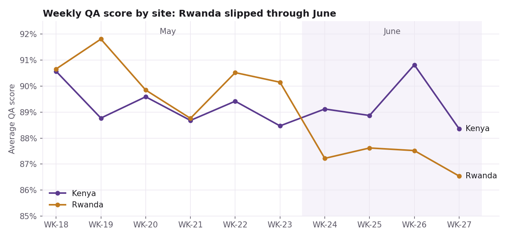

Operational analytics · CCI Kenya
Where customer-support quality was breaking down
A root-cause analysis of ~7,500 QA audits across two support sites. Six defect types explained 70% of defects, and newer agents in Kenya dipped in their second and third months. The findings set coaching priorities.
70% of defects from 6 causes